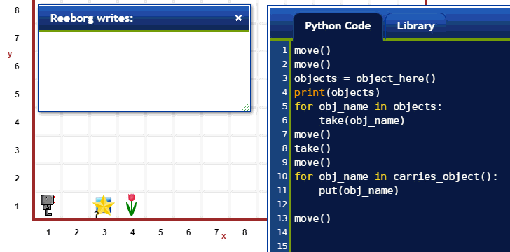
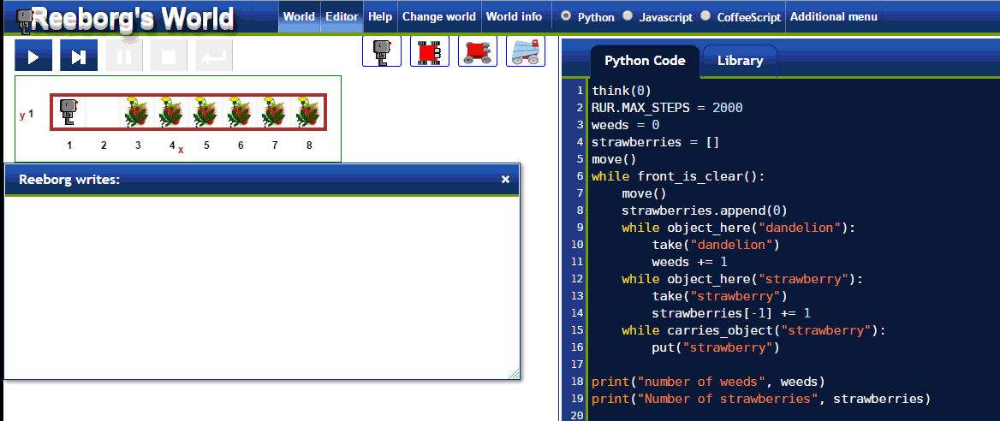

Warning
This document is in the middle of a major revision. Some sections might be missing text, or have French text as placeholder.
Having more than one type of objects makes it possible to learn more advanced programming concept in a natural way. Here we have a brief look at what is possible to do.
As we have seen, when Reeborg is instructed to take() or put()
an object, he can do so with no ambiguity when there is only one
type of objects. But what if Reeborg carries two (or more) different
types of objects and we ask him to put() one down?

As we can see, doing so causes Reeborg to complain. To have Reeborg accomplish the task properly, we need to specify which type of object using a function argument - in this case, a Python string with the name of the object.

Both take() and put() can take a Python string with the name
of an object as an argument. In addition, so can
object_here() and carries_object() as can be seen in the example
below.

Notice how there are two types of objects (a star and a square) initially at the same location: when this is the case, a question mark is shown instead of an integer representing the number of objects (if greater than one). Information about the exact number of objects at this location could be obtained by clicking on the “World info” button at the very top and then by clicking on the image of the objects at that particular location.
Both object_here() and carries_object() return Python lists, with
an empty list being treated as equivalent to False.

In addition to the above functions, a few others in Reeborg’s World
can take one or more arguments. For example, we have already seen pause():
when used without an argument, it requires the user to click on the “run” or
“step” button for Reeborg to resume its movements. However, we can
give it an integer as an argument and it will then only pause for a time
equal to the number given ... in milliseconds. Thus, to pause for one
second, we would write pause(1000).
Another function which we haven’t seen yet is repeat(). In Python, if
we want to repeat lines of code a fixed number of times, we typically
use a for loop. For example, to turn right, Reeborg must do three consecutive
left turns which can be written as:
for i in range(3):
turn_left()
This is not immediately obvious to beginners. The situation is even worse if we use Javascript:
for (var i = 0; i < 3; i++){
turn_left();
}
By contrast, using the mini-language of Guido van Robot (http://gvr.sourceforge.net), the above can simply be written as:
do 3:
turnLeft
Note
A relatively simple implementation of repeat in Python is:
def repeat(fn, n):
for i in range(n):
fn()
The function repeat() was included in Reeborg’s World in an attempt to capture
this simplicity. Thus, to do three left turns, one would write:
repeat( turn_left, 3)
To communicate information to the user, Reeborg can use Python’s print()
function. The output of this function appears in an html preformatted
element, which ensures that line breaks and other spacings are properly reproduced.
There exists another function, narration() which can take as it argument
any html code, and will print it accordingly. By default, the output of narration()
is coloured blue, but this can be changed by the user familiar with html and css.
In addition to object_here() and carries_object() mentioned above,
Reeborg’s World gives plenty of possibilities of working with lists.
For example, one could ask Reeborg to move some objects arranged on a grid
to a new location, keeping the same grid structure: this could be done
with lists of lists.
Below, we illustrate an example where Reeborg must
Note that the world has been designed so that an arbitrary number of weeds (from 0 to 3) and strawberries (1 to 10) can be found at each location; these numbers are randomly chosen each time.
A few things to note about the example shown below:
RUR.MAX_STEPS from its default value of 1000 to
2000; we found that, sometimes it would stop before completing the task.
The way Reeborg programs are run is that they are first executed very
quickly, without anything shown as happening on the screen. Meanwhile,
various instructions trigger the recording of “frames” which can be played back
one at a time (or even in reverse!), creating the animation you see.
If the number of recording frames exceeds the maximum value, the program
stops: this is to help prevent (some) infinite loops.think(0) and disabling code highlighting.
If you are very observant, you may have noticed that the font used by Reeborg is different than that of previous examples. As I wrote this documentation, I came to realize that the previous font, which looked to me more suitable for a robot, was not very readable for certain characters, like ``{}`` which are important for programming. The search continues for the ideal font...
As we have seen, Reeborg can determine if it is facing North ... or not. However, we can help it figure out when it is facing other directions. For example, we know that if Reeborg is facing South, and then makes two left turns, it will be facing North. Two more left turns and Reeborg returns to its original orientation. This suggests the following:
def is_facing_south():
turn_left()
turn_left()
remember = is_facing_north()
turn_left()
turn_left()
return remember
Arguably a bit clumsy, but it works. Something similar can be
done to obtain a left_is_clear() function.
We can extend the idea used for the repeat() function and use
return in clever ways to do things like:
def do_while(fn, condition):
def until():
while condition():
fn()
return until
walk_to_the_wall = do_while(move, front_is_clear)
walk_to_the_wall()